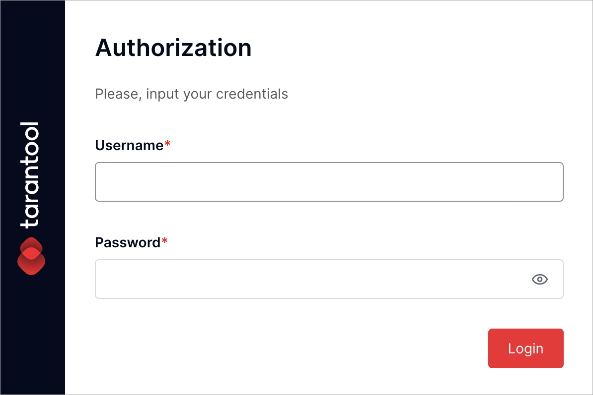
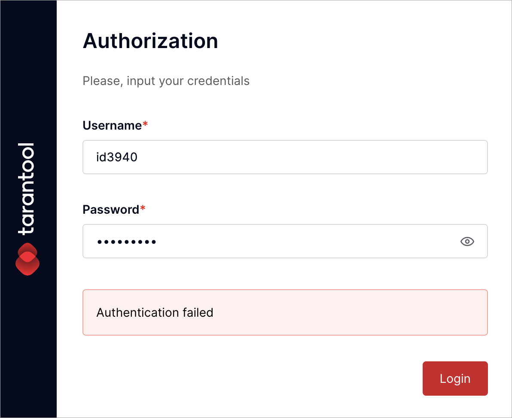
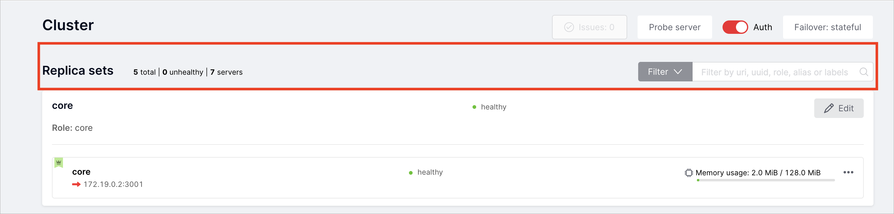
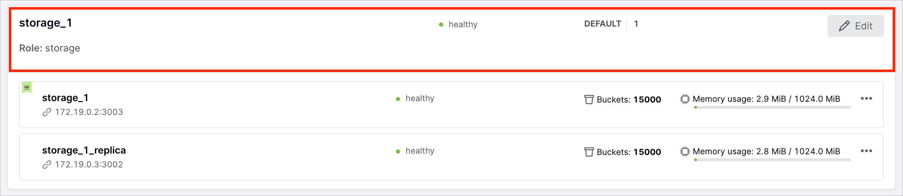
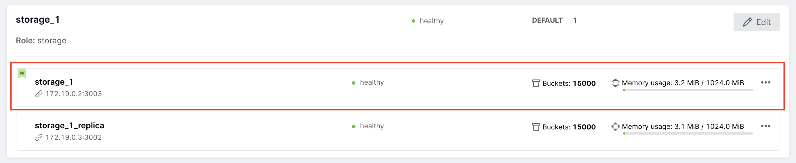
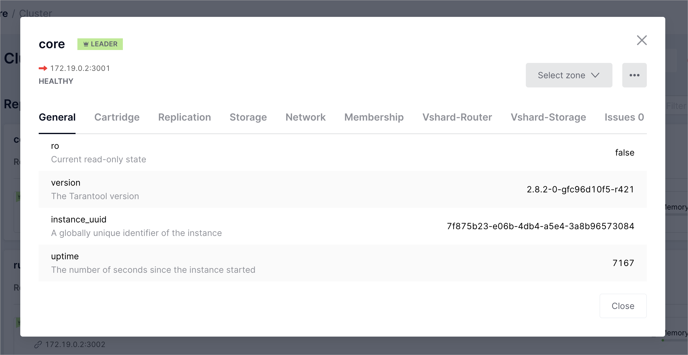
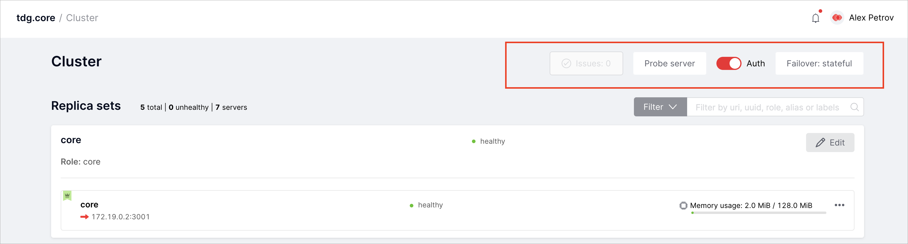

Web UI¶
This chapter explains how to access TDG web UI and sign in. It also gives an overview of the web UI controls and functions.
In the example below, authorization to the TDG system is already enabled. To learn how to enable authorization, read the authorization guide.
Signing in¶
To access the TDG web interface, you need to sign in:
Contact your administrator to get your credentials:
- Username: login that is automatically generated when the administrator creates a user profile.
For example,
ui8896orgz1200. - Password: automatically generated when the administrator creates a user profile.
- TDG server address:
http://<address>:<http_port>, is set by the administrator in the configuration file. This guide uses thehttp://172.19.0.2:8080server address as an example.
- Username: login that is automatically generated when the administrator creates a user profile.
For example,
Open the TDG server address in the browser. You will see the authorization dialog:
Input your credentials. In the Username text field, enter your login. In the Password text field, enter your password.
Click Login.
{kind=link}
During the authorization process, the TDG system will check that your credentials are correct. Also, it will check your access rights to particular TDG tabs. After a successful authorization, you will see the TDG interface. You will only get access to certain tabs in the TDG interface. It depends on the user role that the administrator has given you.
If there is a typo in the credentials, TDG won’t be able to identify you. In that case, you will see the “Authentication failed” message:
{kind=link}
Try to input your credentials one more time.
Web UI overview¶
In the TDG interface, there are two sections:
- Tab pane: a list of tabs to switch between different sections of TDG.
- Working area: displays the contents of the selected tab.
Tab pane¶
The contents of the tab pane vary depending on the user role. Users with the “admin” and “supervisor” rights can see all tabs. Users with the access rights of the “user” role have access to a limited set of tabs.
At the bottom of the page, there is a Collapse menu button. Click it to hide the full tab pane view.
The tab pane consists of the following tabs:
| Cluster | Cluster configuration and administration. |
| Configuration files | TDG configuration settings management. |
| Test | Sending test queries in JSON or XML (SOAP) format. |
| GraphQL | Sending queries in GraphQL format. |
| Model | Current data model uploaded to the system. |
| Repair Queues: Input | Repair queue for the uploaded objects. |
| Repair Queues: Output | Repair queue for the objects replicated to external systems. |
| Repair Queues: Jobs | Repair queue for pending jobs that ended with an error. |
| Logger | Event log. |
| Audit Log | Audit log. |
| Tasks | Task management. |
| Data types | Data types that are represented in the uploaded data model. |
| Connectors | Connector creation and management. |
| Settings | System settings management. |
| Doc | English version of TDG documentation that is available locally. It is deployed from the package with the rest of TDG. As a result, it only contains the chapters published before the package was formed. You can read the up-to-date documentation both in English and in Russian at tarantool.io. |
Cluster tab¶
The Cluster tab displays the current status of the TDG instances cluster. You can administrate it via UI. There are several groups of elements in the interface for cluster management:
Replica sets¶
In the highlighted area, you can see general replica set statistics:
| Total | Total number of replica sets in the cluster. |
| Unhealthy | Number of replica sets with the “unhealthy” status. |
| Servers | Total number of TDG instances. |
| Filter | A dropdown menu to filter replica sets by status or cluster role. |
| Search box | A search box to display replica sets filtered by URI, UUID, role, alias, or labels. |
Replica set widget¶
The following statistics are available in the replica set widget:
| Name and role | For example, replica set “storage_1” with the role “storage”. |
| Status | “Healthy” means the current replica set functions properly. “Unhealthy” means the current replica set is not available or does not function properly. |
| Storage group and replica set weight | Only for replica sets with the “storage” role. For example, storage group “default”, replica set weight “1”. |
| Edit button | Opens a dialog where you can edit the parameters of the replica set. |
| Instances widgets | The widgets of the instances included in this replica set. |
Instance widget¶
The widget of the instance is in the highlighted area. It allows you to see the following information about the instance:
| Instance name | For example, “storage_1” or “storage_1_replica”. |
| URI | Instance URI for binary port access.
Is set in the cluster configuration via the advertise_uri parameter.
For example, 172.19.0.2:3003. |
| Status | “Healthy” means the current instance functions properly. “Unhealthy” means the current instance is not available or does not function properly. |
| Leader indicator | Indicates if the instance is the leader in the replica set. |
| Memory usage indicator | The actual memory used / memory limit set for the instance. For example, 3.3 MiB / 1024.0 MiB. |
| Virtual buckets indicator | Indicates the number of virtual buckets on the instance. Only for replica sets with the “storage” role. |
… button |
Options to see instance details, promote the instance as a leader, disable or expel the instance. |
Instance details¶
For each instance, you can view detailed information about its parameters in read-only mode.
On the Cluster tab of the instance, click … > Server details:
You will see a pop-up window with detailed information about the instance parameters:
More functions¶
Several more TDG functions are also available on the Cluster tab:
| Issues | The history of issues occurring in the cluster operation. |
| Probe server | Manual server availability check. Used when configuring a cluster. |
| Auth | Enable and disable mandatory authorization mode. |
| Failover: disabled/eventual/stateful | Switch for automatic recovery mode after failure. |